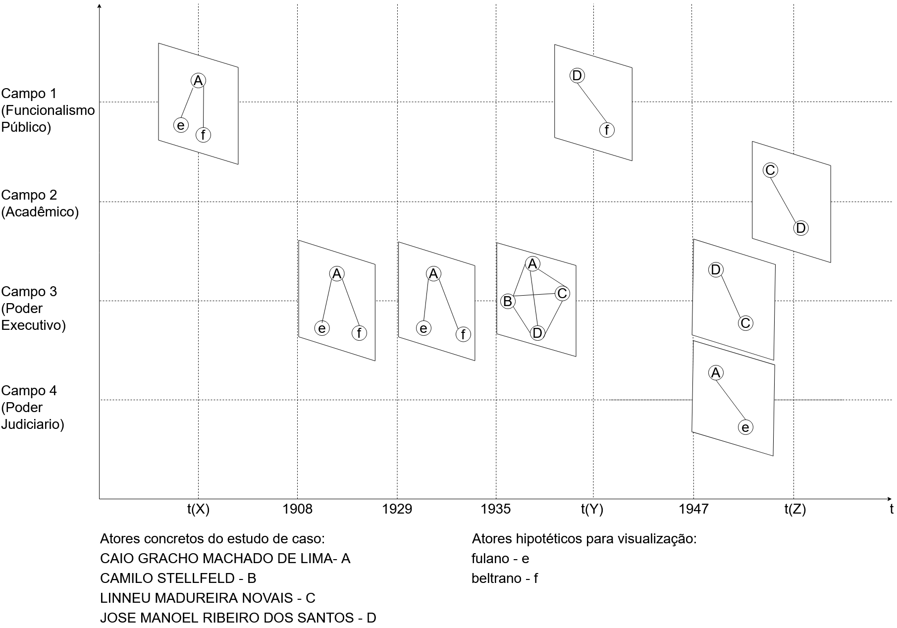

<h1>Escolha um indivíduo</h1>
<mat-form-field class="full-width">
    <mat-label>indivíduo</mat-label>
    <mat-select [(ngModel)]="individuoObj" name="ind">
        <mat-option *ngFor="let ind of individuos" [value]="ind">
            {{ind.viewValue}}
        </mat-option>
    </mat-select>
</mat-form-field>

<div>
    <div>
        <mat-list>
            <mat-list-item>Local de nascimento: {{individuoObj.localNascimento}} </mat-list-item>
            <mat-list-item>Data de nascimento: {{individuoObj.dataNascimento}}</mat-list-item>
            <mat-list-item>Data de óbito: 01/01/2020</mat-list-item>
            <mat-divider></mat-divider>
            <mat-list-item>Pais: Fulaninho de souza</mat-list-item>
            <mat-list-item>Filhos: Beltrao de oliveira</mat-list-item>
            <mat-divider></mat-divider>
            <mat-list-item>Ocupação Atual: Escrivão</mat-list-item>
            <mat-divider></mat-divider>
            <mat-list-item>Ultima atualização dos dados: 01/01/20</mat-list-item>
        </mat-list>
    </div>
</div>

<div id="chart">
    <apx-chart [series]="chartOptions.series" [chart]="chartOptions.chart" [dataLabels]="chartOptions.dataLabels" [plotOptions]="chartOptions.plotOptions" [xaxis]="chartOptions.xaxis" [legend]="chartOptions.legend">
    </apx-chart>
</div>


